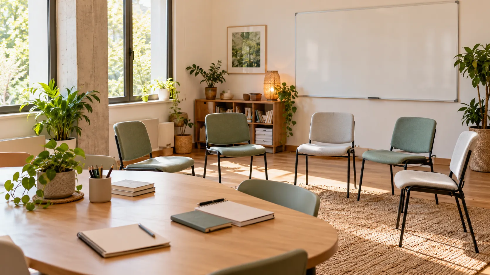

Virtual en vivo
Encuentros por videollamada, con día y horario fijos y espacio para preguntar. Quedan grabados.
Cursos · Talleres · Charlas · Capacitaciones
Aprender también es cuidar.
Cursos, talleres y charlas sobre cuidado, prevención y salud integral: en vivo, presenciales en Mar del Plata o grabados, para quienes cuidan y quieren aprender.

Formación privada no formalMar del Plata
Cuatro modalidades, el mismo acompañamiento: materiales de cada clase y consultas por WhatsApp.
Encuentros por videollamada, con día y horario fijos y espacio para preguntar. Quedan grabados.
Talleres y prácticas en Mar del Plata para aprender haciendo, con acompañamiento de cerca.
La teoría en vivo desde tu casa y la práctica en encuentros presenciales.
Clases para mirar cuando puedas, desde el celular o la compu, con materiales para descargar.
Elegí un área y te mostramos sus cursos.
12 cursos
No encontramos cursos con esa combinación.
Probá con menos filtros o contanos qué tema buscás: lo tenemos en cuenta para las próximas propuestas.
Quiénes somos
Conciencia Vital es un espacio privado de formación y capacitación no formal sobre salud integral, prevención y bienestar. No es una clínica: acá se aprende, se practica y se comparte.
Conciencia Vital nace de la práctica diaria en enfermería y psicología social, y de algo que se repite en cada casa: quien cuida necesita herramientas, información clara y también ser cuidado.
Por eso armamos un espacio de formación para aprender a cuidar mejor, con contenidos cercanos a lo que pasa todos los días y abiertos a cuidadores, familias, estudiantes, personal de enfermería, profesionales y la comunidad.
Brindar formación accesible y de calidad en cuidado, prevención y salud integral, para que cada persona cuide mejor a otros y a sí misma.
Ser en Mar del Plata un espacio de referencia para aprender a cuidar, donde el cuidado de las personas y el de quienes cuidan vayan juntos.
Conciencia Vital está vinculado a Medici Home MDP y comparte su mirada sobre el cuidado en casa.
Es un espacio de formación, no un servicio de atención ni una clínica: las propuestas son capacitaciones privadas de educación no formal.
Una coordinación estable y profesionales invitados según el tema de cada curso.
¿Sos profesional de la salud y querés dictar una capacitación? Escribinos
Cada curso indica qué certificado entrega y qué hace falta para obtenerlo.
Para charlas, talleres y cursos breves. Se entrega con la asistencia.
Para cursos y formaciones. Se entrega al completar la cursada y la actividad o evaluación final.
Son capacitaciones privadas de educación no formal: los certificados acreditan la formación realizada, pero no son títulos oficiales ni otorgan matrícula o habilitación profesional.
Certificado de finalización
Se certifica que
Nombre y apellido
completó el curso
Cuidados básicos de personas mayores
Modalidad mixta · 32 horas · Mar del Plata
Capacitación privada de educación no formal
Artículos, novedades y materiales para descargar y usar en casa.
Pagos, cursada, grabaciones, requisitos y certificación.
¿Otra duda? EscribinosPagos
Elegís el curso, tocás «Inscribirme» y pagás online al confirmar tu inscripción. Si preferís hablarlo antes, escribinos por WhatsApp y te ayudamos.
Sí. Sumás todos los cursos que quieras a tu inscripción y los confirmás juntos.
Cursada
Son por videollamada, en día y horario fijos que se informan antes de empezar. Necesitás conexión a internet y un celular o una computadora.
En Mar del Plata. La dirección exacta se confirma con la inscripción de cada curso.
Grabaciones
Sí: los encuentros virtuales en vivo se graban para que los vuelvas a ver. Los cursos grabados los hacés completos a tu ritmo, cuando puedas.
Requisitos
No. La mayoría de los cursos son de nivel inicial y están abiertos a cuidadores, familias, estudiantes y la comunidad. Si un curso pide algo, figura en sus requisitos.
Certificación
Según el curso, un certificado de participación, por asistir, o de finalización, por completar la cursada y la actividad final.
No. Conciencia Vital brinda capacitaciones privadas de educación no formal: los certificados acreditan la formación realizada, pero no son títulos oficiales ni otorgan matrícula o habilitación profesional.
Aprender también es cuidar.
Dejanos tus datos y el curso que te interesa: te respondemos por WhatsApp con fechas, horarios y cómo inscribirte.
Tu inscripción
Todavía no elegiste ningún curso.
Mirá el catálogo y sumá los que te interesen: los confirmás todos juntos.
Ver cursosCapacitaciones privadas de educación no formal.